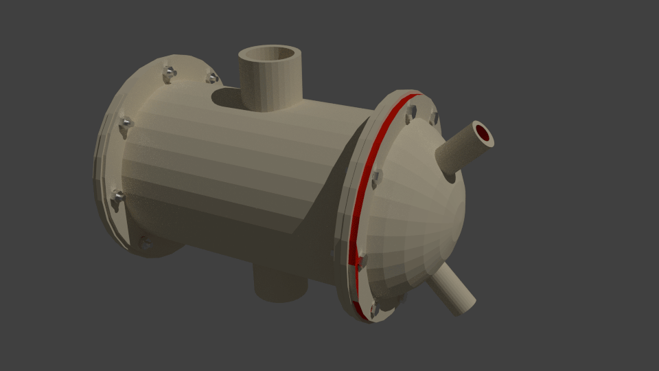
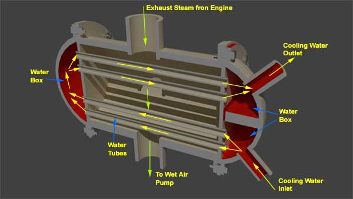

Central Flow Surface Condenser
Inverted Flow Type Surface Condenser
Evaporate Steam Condenser
The steam can be condensed in surface steam condenser in two ways. Firstly, cooling water is passed through a series of tubes and steam passes over the tubes.
Secondly, the steam is passed through a series of tubes and water is allowed to flow in the form of thin film outside the tubes.
A surface condenser mainly consists of a cast iron shell. The shell is cylindrical in shape and closed at both end to form a water box. A tube plate is located between each cover head and the shell. A number of water tubes are fixed to the tube plates. The shell is provided with exhaust steam inlet at the top and condensed steam outlet at the bottom. The hot exhaust steam enters through the top inlet of the surface condenser shell cooling water enters into the inlet water box and then flows through the water tubes runs from one end to other end of the condenser shell as shown. Then it enters into the end water box and returns from this box to outlet water box via return water tubes. During this circulation, the heat is absorbed from exhaust steam by cooling water through the wall of the tubes. As a result, the steam ultimately becomes condensed and comes out through wet air outlet.
This surface condenser required two pumps-
1) One pump to circulate cooling water through the water tubes under pressure.
2) One for extracting wet air, condensates from the bottom of the condenser shell.
Surface steam condensers are of mainly two types :
1) Two flow condenser.
2) Multi flow condenser.
In two flow steam condenser, cooling water travels twice once from inlet-water box to end water box and once from end water box to outlet water box. Two flow condenser is already discussed.
By providing more and more partitions in the water boxes, surface condenser can be made multi flow condenser like, 4 flow, 6 flow etc. In multi-flow process, the rate of heat exchange is rapid but the power required to circulate the cooling water is also more.
According to the direction of flow of steam the surface steam turbine can be classified as-
1) Down flow
2) Central flow
3) Inverted flow surface condenser.

Down Flow Surface Condenser
In Down flow surface condenser, steam enters on the top of the condenser vessel and it comes down over the cooling water pipes. the steam as a result is condensed and the condensate is extracted from the bottom by the condensate extraction pump. The temperature of condensate gets decrease as it passes downwards. Also the partial pressure of steam decreases from top to bottom of the steam condenser. The air exit is shielded from the down stream of the condensate by means of buffle plate and thus air is extracted with only a comparatively small amount of water vapour. As the air comes down, it is progressively cooled and becomes denser and hence it is extracted room the lowest convenient point.
Central Flow Surface Condenser
In this type of surface condenser the suction pipe of the air extraction pump is placed in center of the tubes nest, this causes the condensate to flow radially towards the center as shown by arrows in the figure.

The condensate leaves at the bottom where the condensate extraction pump is situated. The air is withdrawn from the centre of the nest of tubes. This method is an improvement on the down flow type as the steam is directed radially inward by a volute casting around the tube nest it has thus access to the whole periphery of the tubes.
Inverted Flow Type Surface Condenser
Here, the air extraction pump is situated at the top. The steam enters near the bottom and goes upwards. The condensate extraction pump is situated at the bottom of the condenser.
Evaporate Steam Condenser
When the supply of cooling water is very limited, the evaporate type steam condenser is used. In this condenser the exhaust steam is circulated through a series of tubes and a thin film of cooling water is allowed to flow over these tubes. The condensed steam and wet air is extracted from the steam tube outlet by means of wet air pump. A natural or force air flow helps rapid evaporation of the film, which speeds up the condensation process. The water which is not evaporated, collected in a water tray from which it can be pumped back for reusing as cooling water. Evaporate type steam condenser requires minimum cooling water. Only the make up water required to supply to compensate evaporation. This type of steam surface condenser is suitable for small power plant.
Picture page no. 303.
 by
by